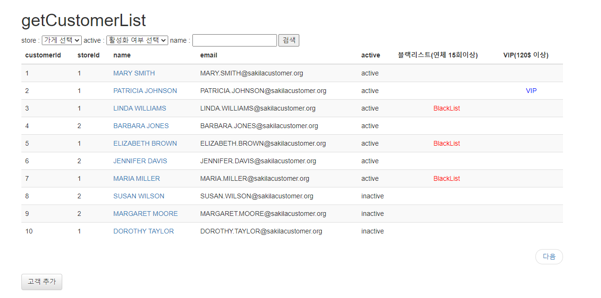
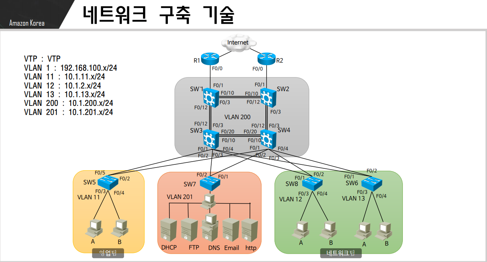
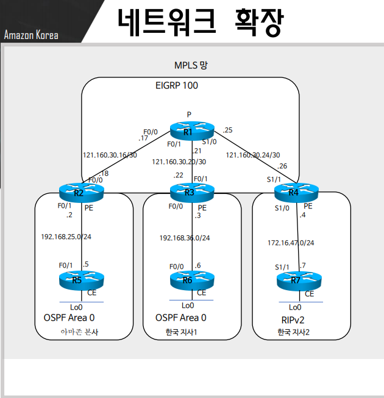

홍민성
신입 개발자Contact
+010 1234 5678
cucudok@naver.com
https://github.com/labote
https://labote.tistory.com
https://github.com/labote
https://labote.tistory.com
Contact
Personal Details
92년 01월 02일
한국어(Native), 영어(Possible)
자격증 : 정보처리기사, 오픽(IH)
Hobbies
-
자전거
영화-
여행 -
게임
홍민성
개발자Summary
Projects
영화 DVD 대여 관리 프로그램11th May 2021 ~ 30th June
 데이터베이스 모델링, SQL 수업시간에 사용한 mysql 영화관련 샘플데이터 베이스(https://dev.mysql.com/doc/index-other.html)에 사용자 인증과 커뮤니티 관련 테이블을 수정/추가하여(테이블19개, 뷰7개) springboot(web mvc)와 mybatis프레임워크를 사용하여 구현한 과제 프로젝트- 프로젝트 개발 환경
- OS : Windows 10
- Language : Java, Javascript, HTML, CSS
- 사용 라이브러리 or 모듈 스팩 : jquery(3.6.0), Lombok(1.18.20), mybaits(2.1.4)
- Database : Mariadb(10.4), HeidiSQL(11.0.0.5919)
- IDE : Spring Tool Suite 4(4.8.1 RELEASE)
- server : tomcat9
- 프로젝트 서비스 환경
- OS : Ubuntu 20
- 실행 환경 : 크롬 브라우저, AWS
한국 지사 내부망 구축 사업8th May 2018 ~ 11th May
 Amazon Korea 한국 지사 내부망 구축 사업- 장비 : Router 2pcs(cisco 2801), Switch 8pcs(Cisco 3550), Computer 11pcs
- 네트워크 인프라 설계
- 네트워크 인프라 구축 및 테스트
- DHCP, DNS< FTP, EMAIL 그리고 WEB 서버 구축(리눅스)
- HSRP 구축(네트워크 장애 대비)
- 보안(Storm control, BPDU Guard, BPDU Filter, Port Blocking)
- - Technical Purview
- Routers : Cisco 2811, Cisco 2801
- Switches : Cisco 3560, Cisco 3550
- IP Phone : Cisco 7960
- Operating Systems : Window 2003, windows 7, window XP, CentOS 6.6, Vmware & Virtualbox
한국 지사 네트워크 확장15th May 2018 ~ 18th May
 Amazon Korea 한국 지사 네트워크 확장 사업- IGP와 IGP 라우팅 프로토콜 설계
- MPLS와 BGP를 이용하여 네트워크 확장
- 네트워크 간 연결 테스트
- - Technical Purview
- Routers : Cisco 2811, Cisco 2801
- Switches : Cisco 3560, Cisco 3550
- IP Phone : Cisco 7960
- Operating Systems : Window 2003, windows 7, window XP, CentOS 6.6, Vmware & Virtualbox
Education
- 2021-현재
구디아카데미 - 2011-2019
숭실 대학교 - 2017-2017
코리아 정보보안 학원 - 2007-2010
상일 고등학교
Skills
Java
Javascript
Jsp&Servlet
Spring
SPRING